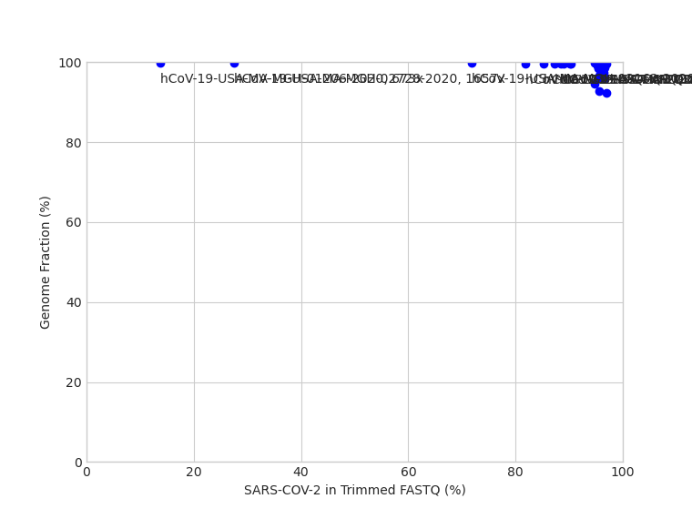
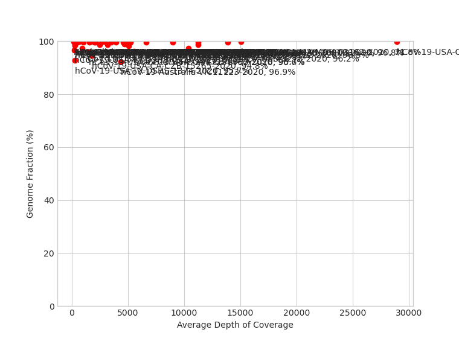
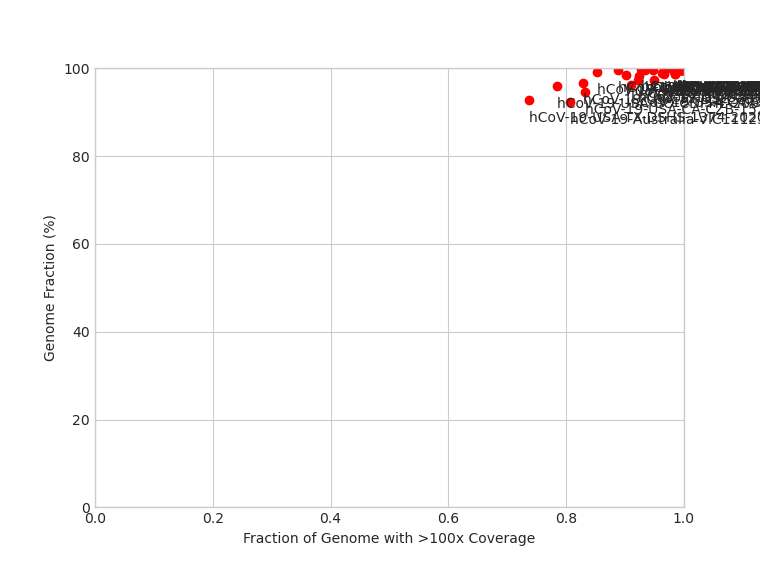

Note: Asterisks (*) indicates a discrepancy between iVar (default) and FreeBayes (if run)
|  |  |  |
| Sample | Lineage (Pangolin) | Clade (Nextstrain) | Data Volume | Quality Control Flags | Kraken2 | QUAST | Variants (iVar) | Unique Variants (FreeBayes) | Consensus Nucleotide Differences (FreeBayes as Reference) | Variants (BreSeq) | ||||||||||||
|---|---|---|---|---|---|---|---|---|---|---|---|---|---|---|---|---|---|---|---|---|---|---|
| Raw Data (read pairs) |
Post Trim (read pairs) |
Genome fraction >90% |
No indels |
Depth >2000 |
Variants >90% |
ORF Frameshifts |
Fastqc quality |
Fastqc adapter |
90% cov >100 |
90% cov >1000 |
Reads SARS-CoV-2 (%) |
Genome Length (bp) |
Genome Fraction (%) |
N's per 100 kbp |
Average Depth of Coverage |
|||||||
| SARS-CoV-2-human-AUS-TL26-2020 | B.35 |
19A |
553588 | 553460 | PASS | PASS | PASS | WARN | FAIL | PASS | PASS | PASS | PASS | 95.64 | 29903.0 | 98.866 | 1437.98 | 4701.2 | G558T G660T G2036T G2604T G3004T G3564T G7038T (+ 20 more) |
G11535T G17096T |
K11535G C12141N G14548R |
RA; 285; G→T; (11.3%); 'G7V (GGT→GTT)'; 'orf1ab →' RA; 482; C→T; (9.0%); 'R73C (CGT→TGT)'; 'orf1ab →' RA; 558; G→T; (30.8%); 'G98V (GGT→GTT)'; 'orf1ab →' RA; 660; G→T; (26.5%); 'G132V (GGT→GTT)'; 'orf1ab →' RA; 663; G→T; (17.2%); 'G133V (GGC→GTC)'; 'orf1ab →' RA; 945; G→T; (6.9%); 'G227V (GGT→GTT)'; 'orf1ab →' RA; 1,403; Δ1 bp; (7.5%); 'coding (1138/13203nt)'; 'orf1ab →' (+ 148 more) |
| hCoV-19-Australia-VIC11123-2020 | D.2 |
20F |
497459 | 497459 | PASS | PASS | PASS | WARN | FAIL | PASS | PASS | FAIL | WARN | 96.88 | 29903.0 | 92.395 | 8186.47 | 4390.6 | C241T A1163T G2418A C3037T A3263T T7540C G8600T (+ 15 more) |
GGA23401AGG GGG28881AAC |
T17954N |
RA; 241; C→T; (100%); 'intergenic (–/-25)'; '– /→ orf1ab' RA; 368; Δ1 bp; (8.0%); 'coding (103/13203nt)'; 'orf1ab →' RA; 369; Δ1 bp; (7.8%); 'coding (104/13203nt)'; 'orf1ab →' JC; 686; Δ9 bp; (14.8%); 'coding (421-429/13203nt)'; 'orf1ab →' RA; 695; G→T; (15.5%); 'D144Y (GAC→TAC)'; 'orf1ab →' RA; 1,163; A→T; (100%); 'I300F (ATT→TTT)'; 'orf1ab →' RA; 2,418; G→A; (100%); 'R718K (AGA→AAA)'; 'orf1ab →' (+ 31 more) |
| hCoV-19-Australia-VIC12012-2020 | D.3 |
20B |
568479 | 568209 | PASS | PASS | PASS | WARN | PASS | PASS | PASS | PASS | PASS | 95.96 | 29903.0 | 99.595 | 404.64 | 4727.7 | C241T T490C A1163T C3037T C7600T G7798T G11634T (+ 7 more) |
GGG28881AAC |
|
RA; 241; C→T; (100%); 'intergenic (–/-25)'; '– /→ orf1ab' RA; 490; T→C; (100%); 'D75D (GAT→GAC)'; 'orf1ab →' RA; 1,163; A→T; (100%); 'I300F (ATT→TTT)'; 'orf1ab →' RA; 3,037; C→T; (100%); 'F924F (TTC→TTT)'; 'orf1ab →' RA; 7,600; C→T; (100%); 'C2445C (TGC→TGT)'; 'orf1ab →' RA; 7,798; G→T; (100%); 'K2511N (AAG→AAT)'; 'orf1ab →' RA; 11,634; G→T; (100%); 'C3790F (TGT→TTT)'; 'orf1ab →' (+ 5 more) |
| hCoV-19-Australia-VIC2020-2020 | B.1.1 |
20B |
258541 | 258538 | PASS | PASS | PASS | WARN | PASS | PASS | PASS | PASS | PASS | 95.84 | 29903.0 | 99.595 | 407.99 | 2106.5 | C241T C3037T C14408T A23063T A23403G T28196C G28881A* (+ 2 more) |
GGG28881AAC |
|
RA; 241; C→T; (100%); 'intergenic (–/-25)'; '– /→ orf1ab' RA; 3,037; C→T; (100%); 'F924F (TTC→TTT)'; 'orf1ab →' RA; 14,408; C→T; (100%); 'P314L (CCT→CTT)'; 'orf1ab →' RA; 16,163; C→T; (10.2%); 'T899I (ACT→ATT)'; 'orf1ab →' RA; 23,063; A→T; (100%); 'N501Y (AAT→TAT)'; 'S →' RA; 23,403; A→G; (100%); 'D614G (GAT→GGT)'; 'S →' RA; 28,196; T→C; (100%); 'R101R (CGT→CGC)'; 'ORF8 →' RA; 28,881; 3 bp→AAC; (100%); 'coding (608-610/1260nt)'; 'N →' |
| hCoV-19-Australia-VIC2653-2020 | B.1.1 |
20B |
584514 | 584428 | PASS | PASS | PASS | WARN | PASS | PASS | PASS | PASS | WARN | 96.51 | 29903.0 | 98.358 | 1641.98 | 5091.7 | C241T C313T C835T C3037T C7843T C10078T C12885T (+ 9 more) |
GGG28881AAC |
|
RA; 241; C→T; (100%); 'intergenic (–/-25)'; '– /→ orf1ab' RA; 313; C→T; (100%); 'L16L (CTC→CTT)'; 'orf1ab →' RA; 701; G→T; (8.2%); 'G146C (GGC→TGC)'; 'orf1ab →' RA; 835; C→T; (100%); 'F190F (TTC→TTT)'; 'orf1ab →' RA; 3,037; C→T; (100%); 'F924F (TTC→TTT)'; 'orf1ab →' RA; 3,784; C→T; (9.2%); 'V1173V (GTC→GTT)'; 'orf1ab →' RA; 7,843; C→T; (100%); 'N2526N (AAC→AAT)'; 'orf1ab →' (+ 20 more) |
| hCoV-19-Australia-VIC357-2020 | B.1.320 |
20A |
436687 | 436648 | PASS | PASS | PASS | WARN | PASS | PASS | PASS | PASS | PASS | 95.99 | 29903.0 | 99.622 | 377.89 | 3969.2 | C241T C379A C1059T C3037T C14408T A23403G G25563T |
|
|
RA; 241; C→T; (100%); 'intergenic (–/-25)'; '– /→ orf1ab' RA; 379; C→A; (100%); 'V38V (GTC→GTA)'; 'orf1ab →' RA; 1,059; C→T; (100%); 'T265I (ACC→ATC)'; 'orf1ab →' RA; 3,037; C→T; (100%); 'F924F (TTC→TTT)'; 'orf1ab →' RA; 14,408; C→T; (100%); 'P314L (CCT→CTT)'; 'orf1ab →' RA; 23,403; A→G; (100%); 'D614G (GAT→GGT)'; 'S →' RA; 25,563; G→T; (100%); 'Q57H (CAG→CAT)'; 'ORF3a →' |
| hCoV-19-Australia-VIC66-2020 | B.4.5 |
19A |
604647 | 604390 | PASS | PASS | PASS | WARN | FAIL | PASS | PASS | PASS | PASS | 96.04 | 29903.0 | 99.595 | 404.64 | 5253.3 | C1076T G1397A G11083T T28688C G29742T |
|
|
RA; 1,076; C→T; (100%); 'P271S (CCA→TCA)'; 'orf1ab →' RA; 1,397; G→A; (100%); 'V378I (GTA→ATA)'; 'orf1ab →' JC; 11,074; +TTT; (7.3%); 'coding (10809/13203nt)'; 'orf1ab →' RA; 11,083; G→T; (100%); 'L3606F (TTG→TTT)'; 'orf1ab →' RA; 28,688; T→C; (100%); 'L139L (TTG→CTG)'; 'N →' RA; 29,742; G→T; (100%); 'intergenic (+68/–)'; 'ORF10 →/ –' |
| hCoV-19-USA-AR-QDX-537-2020 | B.1.199 |
20A |
152923 | 152495 | PASS | PASS | PASS | WARN | FAIL | PASS | PASS | PASS | WARN | 88.9 | 29903.0 | 99.676 | 324.38 | 2001.8 | C241T C2939T C3037T C14408T A21405T A23403G |
|
|
RA; 241; C→T; (100%); 'intergenic (–/-25)'; '– /→ orf1ab' RA; 2,939; C→T; (100%); 'P892S (CCA→TCA)'; 'orf1ab →' RA; 3,037; C→T; (100%); 'F924F (TTC→TTT)'; 'orf1ab →' RA; 14,408; C→T; (100%); 'P314L (CCT→CTT)'; 'orf1ab →' RA; 21,405; A→T; (100%); 'K2646N (AAA→AAT)'; 'orf1ab →' RA; 23,403; A→G; (100%); 'D614G (GAT→GGT)'; 'S →' RA; 28,254; Δ1 bp; (13.5%); 'coding (361/366nt)'; 'ORF8 →' |
| hCoV-19-USA-CA-CZB-10010-2020 | B.1.309 |
20C |
2270432 | 2269290 | PASS | PASS | PASS | WARN | PASS | PASS | PASS | PASS | PASS | 96.83 | 29903.0 | 99.642 | 357.82 | 13904.7 | C241T C1059T G1990T C2939T C3037T A5264G C11916T (+ 7 more) |
|
|
RA; 241; C→T; (100%); 'intergenic (–/-25)'; '– /→ orf1ab' RA; 1,059; C→T; (100%); 'T265I (ACC→ATC)'; 'orf1ab →' RA; 1,990; G→T; (100%); 'Q575H (CAG→CAT)'; 'orf1ab →' RA; 2,939; C→T; (100%); 'P892S (CCA→TCA)'; 'orf1ab →' RA; 3,037; C→T; (100%); 'F924F (TTC→TTT)'; 'orf1ab →' RA; 5,264; A→G; (100%); 'I1667V (ATT→GTT)'; 'orf1ab →' RA; 11,916; C→T; (100%); 'S3884L (TCA→TTA)'; 'orf1ab →' (+ 8 more) |
| hCoV-19-USA-CA-CZB-10245-2020 | B.1.1.205 |
20B |
1940988 | 1940081 | PASS | PASS | PASS | WARN | WARN | PASS | PASS | PASS | WARN | 96.91 | 29903.0 | 99.595 | 404.64 | 11233.8 | C241T C3037T G5539A C14408T G21468A A23403G G28881A* (+ 2 more) |
GGG28881AAC |
|
RA; 332; G→T; (5.3%); 'V23F (GTT→TTT)'; 'orf1ab →' JC; 510; Δ15 bp; (5.1%); 'coding (245-259/13203nt)'; 'orf1ab →' RA; 3,037; C→T; (100%); 'F924F (TTC→TTT)'; 'orf1ab →' RA; 5,261; T→C; (6.7%); 'S1666P (TCT→CCT)'; 'orf1ab →' RA; 5,539; G→A; (100%); 'Q1758Q (CAG→CAA)'; 'orf1ab →' RA; 6,120; C→T; (11.6%); 'S1952L (TCA→TTA)'; 'orf1ab →' RA; 14,408; C→T; (100%); 'P314L (CCT→CTT)'; 'orf1ab →' (+ 8 more) |
| hCoV-19-USA-CA-CZB-13120-2020 | B.1.1.139 |
20B |
414788 | 414765 | PASS | PASS | PASS | WARN | FAIL | PASS | PASS | PASS | PASS | 96.15 | 29903.0 | 99.739 | 260.84 | 3499.3 | C241T C313T C3037T C14408T A23403G T27645A G27666A (+ 3 more) |
GGG28881AAC |
|
RA; 241; C→T; (100%); 'intergenic (–/-25)'; '– /→ orf1ab' RA; 313; C→T; (100%); 'L16L (CTC→CTT)'; 'orf1ab →' RA; 3,037; C→T; (100%); 'F924F (TTC→TTT)'; 'orf1ab →' RA; 14,408; C→T; (100%); 'P314L (CCT→CTT)'; 'orf1ab →' RA; 20,596; G→T; (5.4%); 'E2377* (GAA→TAA)'; 'orf1ab →' JC; 22,386; Δ8 bp; (6.3%); 'coding (824-831/3822nt)'; 'S →' RA; 23,403; A→G; (100%); 'D614G (GAT→GGT)'; 'S →' (+ 4 more) |
| hCoV-19-USA-CA-CZB-13702-2020 | B.1.1.418 |
20B |
1065445 | 1064393 | PASS | PASS | PASS | WARN | PASS | PASS | PASS | PASS | PASS | 95.66 | 29903.0 | 99.625 | 374.54 | 8978.9 | C241T C1812T C3037T A8072G A10323G C14408T T19839C (+ 11 more) |
GGG28881AAC |
|
RA; 241; C→T; (100%); 'intergenic (–/-25)'; '– /→ orf1ab' RA; 1,812; C→T; (100%); 'A516V (GCT→GTT)'; 'orf1ab →' RA; 3,037; C→T; (100%); 'F924F (TTC→TTT)'; 'orf1ab →' RA; 8,072; A→G; (100%); 'N2603D (AAC→GAC)'; 'orf1ab →' RA; 10,323; A→G; (100%); 'K3353R (AAG→AGG)'; 'orf1ab →' RA; 14,408; C→T; (100%); 'P314L (CCT→CTT)'; 'orf1ab →' RA; 19,839; T→C; (100%); 'N2124N (AAT→AAC)'; 'orf1ab →' (+ 10 more) |
| hCoV-19-USA-CA-CZB-15265-2020 | B.1.1.450 |
20B |
209389 | 209379 | PASS | PASS | FAIL | WARN | PASS | PASS | PASS | FAIL | WARN | 94.8 | 29903.0 | 94.572 | 5651.61 | 1802.7 | C241T C3037T C3787T C14408T G17388A A23403G C27002T (+ 5 more) |
C6151A GGG28881AAC |
|
RA; 241; C→T; (100%); 'intergenic (–/-25)'; '– /→ orf1ab' RA; 3,037; C→T; (100%); 'F924F (TTC→TTT)'; 'orf1ab →' RA; 3,787; C→T; (100%); 'Y1174Y (TAC→TAT)'; 'orf1ab →' RA; 6,151; C→A; (100%); 'D1962E (GAC→GAA)'; 'orf1ab →' RA; 14,408; C→T; (100%); 'P314L (CCT→CTT)'; 'orf1ab →' RA; 17,388; G→A; (100%); 'L1307L (TTG→TTA)'; 'orf1ab →' RA; 23,403; A→G; (100%); 'D614G (GAT→GGT)'; 'S →' (+ 4 more) |
| hCoV-19-USA-CA-CZB-15587-2020 | B.1.1.512 |
20B |
300850 | 300832 | PASS | PASS | PASS | WARN | PASS | PASS | PASS | PASS | WARN | 95.89 | 29903.0 | 99.769 | 548.44 | 2695.3 | C20T C241T A1916G C2453T C3037T A6616G C7420T (+ 21 more) |
GGG28881AAC |
|
RA; 241; C→T; (100%); 'intergenic (–/-25)'; '– /→ orf1ab' RA; 1,916; A→G; (100%); 'T551A (ACT→GCT)'; 'orf1ab →' RA; 2,453; C→T; (100%); 'L730F (CTC→TTC)'; 'orf1ab →' RA; 3,037; C→T; (100%); 'F924F (TTC→TTT)'; 'orf1ab →' RA; 6,616; A→G; (100%); 'L2117L (TTA→TTG)'; 'orf1ab →' RA; 7,420; C→T; (100%); 'I2385I (ATC→ATT)'; 'orf1ab →' RA; 9,388; G→T; (100%); 'L3041F (TTG→TTT)'; 'orf1ab →' (+ 20 more) |
| hCoV-19-USA-CA-CZB-16803-2020 | B.1.232 |
20A |
333279 | 333259 | PASS | PASS | PASS | WARN | PASS | PASS | PASS | PASS | PASS | 95.56 | 29903.0 | 99.769 | 331.07 | 2898.1 | G185T C241T C1059T C3037T G3216T G4201T T5804C (+ 29 more) |
|
R26325A |
RA; 185; G→T; (60.3%); 'intergenic (–/-81)'; '– /→ orf1ab' RA; 241; C→T; (100%); 'intergenic (–/-25)'; '– /→ orf1ab' RA; 1,059; C→T; (28.9%); 'T265I (ACC→ATC)'; 'orf1ab →' RA; 3,037; C→T; (100%); 'F924F (TTC→TTT)'; 'orf1ab →' RA; 3,216; G→T; (40.9%); 'S984I (AGT→ATT)'; 'orf1ab →' RA; 4,201; G→T; (73.9%); 'M1312I (ATG→ATT)'; 'orf1ab →' RA; 5,804; T→C; (61.8%); 'C1847R (TGC→CGC)'; 'orf1ab →' (+ 31 more) |
| hCoV-19-USA-CA-CZB-19306-2020 | B.1 |
20C |
752441 | 752402 | PASS | PASS | PASS | WARN | PASS | PASS | PASS | PASS | PASS | 96.27 | 29903.0 | 99.646 | 424.71 | 6645.5 | C241T C280T C1059T G1493A C1594T G1730A C2706T (+ 26 more) |
|
|
RA; 241; C→T; (100%); 'intergenic (–/-25)'; '– /→ orf1ab' RA; 280; C→T; (85.8%); 'V5V (GTC→GTT)'; 'orf1ab →' RA; 1,059; C→T; (84.4%); 'T265I (ACC→ATC)'; 'orf1ab →' RA; 1,493; G→A; (79.8%); 'V410M (GTG→ATG)'; 'orf1ab →' RA; 1,594; C→T; (35.2%); 'S443S (TCC→TCT)'; 'orf1ab →' RA; 1,730; G→A; (23.9%); 'E489K (GAA→AAA)'; 'orf1ab →' RA; 2,706; C→T; (81.0%); 'T814I (ACA→ATA)'; 'orf1ab →' (+ 40 more) |
| hCoV-19-USA-CA-CZB-2190-2020 | B.1.452 |
20C |
3391589 | 3391472 | PASS | PASS | PASS | WARN | PASS | PASS | PASS | PASS | PASS | 96.26 | 29903.0 | 99.769 | 230.75 | 28939.9 | C241T C1059T C3037T C3602T C14408T C16762T A23403G G25563T |
|
|
RA; 241; C→T; (100%); 'intergenic (–/-25)'; '– /→ orf1ab' RA; 1,059; C→T; (100%); 'T265I (ACC→ATC)'; 'orf1ab →' RA; 3,037; C→T; (100%); 'F924F (TTC→TTT)'; 'orf1ab →' RA; 3,602; C→T; (100%); 'H1113Y (CAC→TAC)'; 'orf1ab →' RA; 14,408; C→T; (100%); 'P314L (CCT→CTT)'; 'orf1ab →' RA; 16,762; C→T; (100%); 'L1099F (CTT→TTT)'; 'orf1ab →' RA; 23,403; A→G; (100%); 'D614G (GAT→GGT)'; 'S →' RA; 25,563; G→T; (100%); 'Q57H (CAG→CAT)'; 'ORF3a →' |
| hCoV-19-USA-CA-CZB-3273-2020 | B.1.1.463 |
20B |
1233681 | 1233625 | PASS | PASS | PASS | WARN | PASS | PASS | PASS | PASS | WARN | 96.21 | 29903.0 | 97.348 | 2989.67 | 10364.2 | C241T C3037T C14408T A22759G A23403G G28881A* G28882A* G28883C* |
GGG28881AAC |
N29871A |
RA; 3,037; C→T; (100%); 'F924F (TTC→TTT)'; 'orf1ab →' RA; 14,408; C→T; (100%); 'P314L (CCT→CTT)'; 'orf1ab →' RA; 17,722; G→T; (5.2%); 'V1419L (GTA→TTA)'; 'orf1ab →' RA; 22,759; A→G; (100%); 'S399S (TCA→TCG)'; 'S →' RA; 23,403; A→G; (100%); 'D614G (GAT→GGT)'; 'S →' RA; 28,881; 3 bp→AAC; (100%); 'coding (608-610/1260nt)'; 'N →' |
| hCoV-19-USA-CA-CZB-6122-2020 | B.1.1.514 |
20B |
1284427 | 1284396 | PASS | PASS | PASS | WARN | FAIL | PASS | PASS | PASS | PASS | 96.28 | 29903.0 | 98.632 | 1371.1 | 11265.5 | C3037T G10265A C14408T G14430T A23403G G28881A* G28882A* G28883C* |
GGG28881AAC |
A23144N |
RA; 672; A→C; (5.7%); 'Y136S (TAC→TCC)'; 'orf1ab →' RA; 897; C→G; (5.1%); 'A211G (GCT→GGT)'; 'orf1ab →' RA; 2,730; A→G; (5.5%); 'K822R (AAG→AGG)'; 'orf1ab →' RA; 3,037; C→T; (100%); 'F924F (TTC→TTT)'; 'orf1ab →' RA; 4,442; G→T; (5.2%); 'V1393L (GTG→TTG)'; 'orf1ab →' RA; 10,265; G→A; (100%); 'G3334S (GGT→AGT)'; 'orf1ab →' RA; 12,298; A→C; (9.8%); 'Q4011H (CAA→CAC)'; 'orf1ab →' (+ 26 more) |
| hCoV-19-USA-CA-CZB-6993-2020 | B.1.1.174 |
20B |
648647 | 648614 | PASS | PASS | PASS | WARN | FAIL | PASS | PASS | PASS | WARN | 95.7 | 29903.0 | 96.127 | 4511.25 | 5537.6 | G443A G2747T T3001C C3037T G4688+T* C6843T C7967T (+ 30 more) |
GGG28881AAC |
G11810N A15580N G24301N T24459N TG25446NR |
RA; 470; G→T; (18.7%); 'V69L (GTG→TTG)'; 'orf1ab →' RA; 2,747; G→T; (48.3%); 'D828Y (GAC→TAC)'; 'orf1ab →' RA; 3,001; T→C; (100%); 'G912G (GGT→GGC)'; 'orf1ab →' RA; 3,037; C→T; (100%); 'F924F (TTC→TTT)'; 'orf1ab →' RA; 4,087; T→C; (5.6%); 'I1274I (ATT→ATC)'; 'orf1ab →' RA; 4,223; G→T; (20.5%); 'V1320L (GTG→TTG)'; 'orf1ab →' RA; 5,476; A→G; (7.2%); 'Q1737Q (CAA→CAG)'; 'orf1ab →' (+ 46 more) |
| hCoV-19-USA-CA-QDX-110-2020 | B.1.336 |
20C |
21572 | 21297 | PASS | PASS | FAIL | WARN | FAIL | PASS | PASS | PASS | WARN | 94.68 | 29903.0 | 99.826 | 180.58 | 169.9 | C241T C1059T C3037T C5184G C9967T C14408T A23403G (+ 3 more) |
|
|
RA; 241; C→T; (100%); 'intergenic (–/-25)'; '– /→ orf1ab' RA; 1,059; C→T; (100%); 'T265I (ACC→ATC)'; 'orf1ab →' RA; 1,957; G→T; (5.0%); 'K564N (AAG→AAT)'; 'orf1ab →' RA; 3,037; C→T; (100%); 'F924F (TTC→TTT)'; 'orf1ab →' RA; 4,038; A→C; (7.4%); 'D1258A (GAC→GCC)'; 'orf1ab →' RA; 4,047; G→T; (7.6%); 'G1261V (GGC→GTC)'; 'orf1ab →' RA; 5,184; C→G; (37.6%); 'P1640R (CCT→CGT)'; 'orf1ab →' (+ 22 more) |
| hCoV-19-USA-CA-QDX-1984-2020 | B.1.578 |
20A |
78420 | 76658 | PASS | PASS | FAIL | WARN | PASS | PASS | PASS | PASS | WARN | 90.21 | 29903.0 | 99.676 | 324.38 | 1065.6 | C241T C379A C1059T C3037T C14408T C21304A* G21305A* (+ 3 more) |
CG21304AA |
|
RA; 241; C→T; (100%); 'intergenic (–/-25)'; '– /→ orf1ab' RA; 379; C→A; (100%); 'V38V (GTC→GTA)'; 'orf1ab →' RA; 1,059; C→T; (100%); 'T265I (ACC→ATC)'; 'orf1ab →' RA; 3,037; C→T; (100%); 'F924F (TTC→TTT)'; 'orf1ab →' RA; 14,408; C→T; (100%); 'P314L (CCT→CTT)'; 'orf1ab →' RA; 21,304; 2 bp→AA; (100%); 'coding (7837-7838/8088nt)'; 'orf1ab →' RA; 23,403; A→G; (100%); 'D614G (GAT→GGT)'; 'S →' (+ 2 more) |
| hCoV-19-USA-CO-CDPHE-2004220748-2020 | B.1.492 |
20C |
183129 | 178182 | PASS | PASS | FAIL | WARN | PASS | PASS | PASS | PASS | WARN | 95.0 | 29903.0 | 99.595 | 404.64 | 1588.5 | C241T C1059T C3037T T4888A C14408T A23403G G25563T G28727T |
|
|
RA; 241; C→T; (100%); 'intergenic (–/-25)'; '– /→ orf1ab' RA; 1,059; C→T; (100%); 'T265I (ACC→ATC)'; 'orf1ab →' RA; 3,037; C→T; (100%); 'F924F (TTC→TTT)'; 'orf1ab →' RA; 4,888; T→A; (100%); 'P1541P (CCT→CCA)'; 'orf1ab →' RA; 14,408; C→T; (100%); 'P314L (CCT→CTT)'; 'orf1ab →' RA; 21,724; G→C; (9.1%); 'L54F (TTG→TTC)'; 'S →' RA; 23,403; A→G; (100%); 'D614G (GAT→GGT)'; 'S →' (+ 2 more) |
| hCoV-19-USA-CO-CDPHE-2007251462-2020 | B.1.570 |
20A |
195249 | 166760 | PASS | PASS | FAIL | WARN | PASS | PASS | PASS | FAIL | WARN | 96.61 | 29903.0 | 96.037 | 3962.81 | 1526.1 | C241T C1059T C3037T T7767C C8266T G11087A C13452T (+ 6 more) |
|
|
RA; 241; C→T; (100%); 'intergenic (–/-25)'; '– /→ orf1ab' RA; 1,059; C→T; (100%); 'T265I (ACC→ATC)'; 'orf1ab →' RA; 3,037; C→T; (100%); 'F924F (TTC→TTT)'; 'orf1ab →' RA; 7,767; T→C; (100%); 'I2501T (ATC→ACC)'; 'orf1ab →' RA; 8,266; C→T; (100%); 'G2667G (GGC→GGT)'; 'orf1ab →' RA; 11,087; G→A; (100%); 'E3608K (GAA→AAA)'; 'orf1ab →' RA; 13,452; C→T; (100%); 'A4396V (GCA→GTA)'; 'orf1ab →' (+ 6 more) |
| hCoV-19-USA-CT-QDX-2695-2020 | B.1 |
20C |
51011 | 27699 | PASS | PASS | FAIL | WARN | FAIL | PASS | PASS | FAIL | WARN | 85.26 | 29903.0 | 99.676 | 327.73 | 373.6 | C241T C1059T C3037T C14408T G17808T A23403G G25563T |
|
|
RA; 241; C→T; (100%); 'intergenic (–/-25)'; '– /→ orf1ab' RA; 1,059; C→T; (100%); 'T265I (ACC→ATC)'; 'orf1ab →' RA; 3,037; C→T; (100%); 'F924F (TTC→TTT)'; 'orf1ab →' RA; 14,408; C→T; (100%); 'P314L (CCT→CTT)'; 'orf1ab →' RA; 17,808; G→T; (100%); 'K1447N (AAG→AAT)'; 'orf1ab →' RA; 23,403; A→G; (100%); 'D614G (GAT→GGT)'; 'S →' RA; 25,563; G→T; (100%); 'Q57H (CAG→CAT)'; 'ORF3a →' RA; 28,254; Δ1 bp; (12.5%); 'coding (361/366nt)'; 'ORF8 →' |
| hCoV-19-USA-MA-MGH-01206-2020 | B.1.390 |
20A |
766348 | 762506 | PASS | PASS | FAIL | WARN | FAIL | PASS | PASS | PASS | WARN | 13.8 | 29903.0 | 99.756 | 250.81 | 673.8 | C241T C3037T C14408T C18807T A23403G A27354G T27645C (+ 2 more) |
|
|
RA; 241; C→T; (100%); 'intergenic (–/-25)'; '– /→ orf1ab' RA; 3,037; C→T; (100%); 'F924F (TTC→TTT)'; 'orf1ab →' RA; 5,275:1; +A; (7.8%); 'coding (5010/13203nt)'; 'orf1ab →' RA; 7,459; G→A; (13.1%); 'V2398V (GTG→GTA)'; 'orf1ab →' RA; 12,413; A→C; (7.1%); 'N4050H (AAC→CAC)'; 'orf1ab →' RA; 14,408; C→T; (100%); 'P314L (CCT→CTT)'; 'orf1ab →' RA; 15,818; T→G; (10.0%); 'F784C (TTT→TGT)'; 'orf1ab →' (+ 8 more) |
| hCoV-19-USA-MA-MGH-02728-2020 | B.1.375 |
20C |
953874 | 949894 | PASS | WARN | FAIL | WARN | WARN | PASS | PASS | PASS | WARN | 27.45 | 29897.0 | 99.776 | 224.1 | 1657.4 | C241T C1059T T1171C C3037T A5747G C10789T C14408T (+ 9 more) |
ATACATG21764A |
|
RA; 36; C→T; (7.9%); 'intergenic (–/-230)'; '– /→ orf1ab' RA; 241; C→T; (100%); 'intergenic (–/-25)'; '– /→ orf1ab' RA; 1,059; C→T; (100%); 'T265I (ACC→ATC)'; 'orf1ab →' RA; 1,171; T→C; (100%); 'S302S (TCT→TCC)'; 'orf1ab →' RA; 3,037; C→T; (100%); 'F924F (TTC→TTT)'; 'orf1ab →' RA; 5,747; A→G; (100%); 'T1828A (ACT→GCT)'; 'orf1ab →' RA; 7,459; G→A; (7.3%); 'V2398V (GTG→GTA)'; 'orf1ab →' (+ 15 more) |
| hCoV-19-USA-MA-MGH-03162-2020 | B.1.385 |
20A |
3255954 | 3252398 | PASS | PASS | PASS | WARN | PASS | PASS | PASS | PASS | PASS | 71.77 | 29903.0 | 99.913 | 86.95 | 15046.8 | C241T C1288T G1298A C3037T C6525T C14189T C14408T (+ 10 more) |
|
|
RA; 241; C→T; (100%); 'intergenic (–/-25)'; '– /→ orf1ab' RA; 1,288; C→T; (100%); 'C341C (TGC→TGT)'; 'orf1ab →' RA; 1,298; G→A; (100%); 'G345S (GGC→AGC)'; 'orf1ab →' RA; 3,037; C→T; (100%); 'F924F (TTC→TTT)'; 'orf1ab →' RA; 6,525; C→T; (100%); 'T2087I (ACA→ATA)'; 'orf1ab →' RA; 13,693; A→T; (5.9%); 'T76S (ACA→TCA)'; 'orf1ab →' RA; 14,189; C→T; (100%); 'A241V (GCT→GTT)'; 'orf1ab →' (+ 14 more) |
| hCoV-19-USA-MN-QDX-1320-2020 | B.1.589 |
20C |
37617 | 28017 | PASS | PASS | FAIL | WARN | PASS | PASS | PASS | PASS | WARN | 87.28 | 29903.0 | 99.676 | 324.38 | 383.3 | C241T C1059T C3037T C10319T C12374T C14408T A23403G (+ 2 more) |
|
|
RA; 241; C→T; (100%); 'intergenic (–/-25)'; '– /→ orf1ab' RA; 1,059; C→T; (100%); 'T265I (ACC→ATC)'; 'orf1ab →' RA; 3,037; C→T; (100%); 'F924F (TTC→TTT)'; 'orf1ab →' RA; 10,319; C→T; (100%); 'L3352F (CTT→TTT)'; 'orf1ab →' RA; 12,374; C→T; (100%); 'L4037F (CTT→TTT)'; 'orf1ab →' RA; 14,408; C→T; (100%); 'P314L (CCT→CTT)'; 'orf1ab →' RA; 23,403; A→G; (100%); 'D614G (GAT→GGT)'; 'S →' (+ 2 more) |
| hCoV-19-USA-MN-QDX-981-2020 | B.1.265 |
20C |
20711 | 20498 | PASS | PASS | FAIL | WARN | PASS | PASS | PASS | PASS | WARN | 88.4 | 29903.0 | 99.676 | 324.38 | 288.0 | C241T C1059T C3037T C14408T A23403G G25563T C27964T C28833T |
|
|
RA; 241; C→T; (100%); 'intergenic (–/-25)'; '– /→ orf1ab' RA; 1,059; C→T; (100%); 'T265I (ACC→ATC)'; 'orf1ab →' RA; 3,037; C→T; (100%); 'F924F (TTC→TTT)'; 'orf1ab →' RA; 14,408; C→T; (100%); 'P314L (CCT→CTT)'; 'orf1ab →' RA; 23,403; A→G; (100%); 'D614G (GAT→GGT)'; 'S →' RA; 25,563; G→T; (100%); 'Q57H (CAG→CAT)'; 'ORF3a →' RA; 27,673; C→T; (10.2%); 'Q94* (CAA→TAA)'; 'ORF7a →' (+ 2 more) |
| hCoV-19-USA-MO-QDX-675-2020 | B.1.264 |
20C |
34930 | 33201 | PASS | PASS | FAIL | WARN | PASS | PASS | PASS | PASS | WARN | 90.37 | 29903.0 | 99.676 | 324.38 | 480.1 | C241T C1059T C3037T C11919T C14408T A23403G G25563T |
|
|
RA; 241; C→T; (100%); 'intergenic (–/-25)'; '– /→ orf1ab' RA; 1,059; C→T; (100%); 'T265I (ACC→ATC)'; 'orf1ab →' RA; 3,037; C→T; (100%); 'F924F (TTC→TTT)'; 'orf1ab →' RA; 11,919; C→T; (100%); 'S3885F (TCT→TTT)'; 'orf1ab →' RA; 14,408; C→T; (100%); 'P314L (CCT→CTT)'; 'orf1ab →' RA; 23,403; A→G; (100%); 'D614G (GAT→GGT)'; 'S →' RA; 25,563; G→T; (100%); 'Q57H (CAG→CAT)'; 'ORF3a →' |
| hCoV-19-USA-NY-QDX-2732-2020 | B.1.323 |
20C |
372174 | 353621 | PASS | PASS | PASS | WARN | FAIL | PASS | PASS | PASS | PASS | 81.77 | 29903.0 | 99.676 | 324.38 | 4593.4 | C241T C1059T C3037T T9070C C14408T A23403G G25563T |
|
|
RA; 241; C→T; (100%); 'intergenic (–/-25)'; '– /→ orf1ab' RA; 256; G→A; (13.1%); 'intergenic (–/-10)'; '– /→ orf1ab' JC; 510; Δ15 bp; (8.8%); 'coding (245-259/13203nt)'; 'orf1ab →' RA; 1,059; C→T; (100%); 'T265I (ACC→ATC)'; 'orf1ab →' RA; 3,037; C→T; (100%); 'F924F (TTC→TTT)'; 'orf1ab →' RA; 4,207; G→A; (11.4%); 'A1314A (GCG→GCA)'; 'orf1ab →' JC; 6,045; Δ3 bp; (5.6%); 'coding (5780-5782/13203nt)'; 'orf1ab →' (+ 12 more) |
| hCoV-19-USA-TX-DSHS-0577-2020 | B.1.287 |
20C |
29680 | 29180 | PASS | PASS | FAIL | WARN | PASS | PASS | PASS | FAIL | WARN | 95.55 | 29903.0 | 96.776 | 3227.1 | 255.6 | C241T C1059T C3037T C14408T C15699T C20555T C21772T (+ 2 more) |
|
|
RA; 241; C→T; (100%); 'intergenic (–/-25)'; '– /→ orf1ab' RA; 1,059; C→T; (100%); 'T265I (ACC→ATC)'; 'orf1ab →' RA; 3,037; C→T; (100%); 'F924F (TTC→TTT)'; 'orf1ab →' RA; 14,408; C→T; (100%); 'P314L (CCT→CTT)'; 'orf1ab →' RA; 20,555; C→T; (100%); 'S2363F (TCT→TTT)'; 'orf1ab →' RA; 21,772; C→T; (100%); 'V70V (GTC→GTT)'; 'S →' RA; 23,403; A→G; (100%); 'D614G (GAT→GGT)'; 'S →' RA; 25,563; G→T; (100%); 'Q57H (CAG→CAT)'; 'ORF3a →' |
| hCoV-19-USA-TX-DSHS-1374-2020 | B.1.384 |
20A |
33689 | 33247 | PASS | PASS | FAIL | WARN | PASS | PASS | PASS | FAIL | WARN | 95.67 | 29903.0 | 92.81 | 7808.58 | 289.9 | C241T A2253G C3037T C14408T T17982C A23403G C26256T C29668T |
|
|
RA; 241; C→T; (100%); 'intergenic (–/-25)'; '– /→ orf1ab' RA; 2,253; A→G; (86.1%); 'Q663R (CAA→CGA)'; 'orf1ab →' RA; 3,037; C→T; (100%); 'F924F (TTC→TTT)'; 'orf1ab →' RA; 14,408; C→T; (100%); 'P314L (CCT→CTT)'; 'orf1ab →' RA; 17,982; T→C; (51.9%); 'Y1505Y (TAT→TAC)'; 'orf1ab →' RA; 21,629; C→A; (20.0%); 'Q23K (CAA→AAA)'; 'S →' RA; 23,403; A→G; (100%); 'D614G (GAT→GGT)'; 'S →' (+ 2 more) |
| hCoV-19-USA-TX-DSHS-1979-2020 | B.1.1.440 |
20B |
35441 | 34836 | PASS | PASS | FAIL | WARN | PASS | PASS | PASS | FAIL | WARN | 95.19 | 29903.0 | 99.131 | 902.92 | 307.1 | C241T C3037T T6304G C14408T A23403G G28881A* G28882A* (+ 2 more) |
GGG28881AAC |
|
RA; 241; C→T; (100%); 'intergenic (–/-25)'; '– /→ orf1ab' RA; 3,037; C→T; (100%); 'F924F (TTC→TTT)'; 'orf1ab →' RA; 6,304; T→G; (100%); 'L2013L (CTT→CTG)'; 'orf1ab →' RA; 14,408; C→T; (100%); 'P314L (CCT→CTT)'; 'orf1ab →' RA; 23,403; A→G; (100%); 'D614G (GAT→GGT)'; 'S →' RA; 28,881; 3 bp→AAC; (100%); 'coding (608-610/1260nt)'; 'N →' RA; 29,348; G→T; (100%); 'A359S (GCA→TCA)'; 'N →' |
| hCoV-19-USA-TX-DSHS-2474-2020 | B.1.1.362 |
20B |
33805 | 33283 | PASS | PASS | FAIL | WARN | PASS | PASS | PASS | PASS | WARN | 95.34 | 29903.0 | 98.609 | 1668.73 | 303.1 | C241T A2375C C3037T C14408T C16887T C21855T A23403G (+ 4 more) |
GGG28881AAC |
|
RA; 241; C→T; (100%); 'intergenic (–/-25)'; '– /→ orf1ab' RA; 2,375; A→C; (100%); 'N704H (AAT→CAT)'; 'orf1ab →' RA; 3,037; C→T; (100%); 'F924F (TTC→TTT)'; 'orf1ab →' RA; 14,408; C→T; (100%); 'P314L (CCT→CTT)'; 'orf1ab →' RA; 16,887; C→T; (100%); 'Y1140Y (TAC→TAT)'; 'orf1ab →' RA; 21,855; C→T; (100%); 'S98F (TCT→TTT)'; 'S →' RA; 23,403; A→G; (100%); 'D614G (GAT→GGT)'; 'S →' (+ 3 more) |
| hCoV-19-USA-UT-02577-2020 | B.1.112 |
20A |
273434 | 270526 | PASS | PASS | PASS | WARN | PASS | PASS | PASS | PASS | WARN | 96.64 | 29903.0 | 98.733 | 1267.43 | 2499.9 | C241T C703T C3037T A6512C C14408T C18877T A23403G (+ 3 more) |
|
|
RA; 241; C→T; (100%); 'intergenic (–/-25)'; '– /→ orf1ab' RA; 703; C→T; (100%); 'G146G (GGC→GGT)'; 'orf1ab →' RA; 3,037; C→T; (100%); 'F924F (TTC→TTT)'; 'orf1ab →' RA; 6,512; A→C; (100%); 'S2083R (AGT→CGT)'; 'orf1ab →' RA; 14,408; C→T; (100%); 'P314L (CCT→CTT)'; 'orf1ab →' RA; 18,877; C→T; (100%); 'L1804L (CTA→TTA)'; 'orf1ab →' RA; 23,403; A→G; (100%); 'D614G (GAT→GGT)'; 'S →' (+ 3 more) |
| hCoV-19-USA-UT-UPHL-201022808-2020 | B.1 |
20C |
362728 | 357902 | PASS | PASS | PASS | WARN | PASS | PASS | PASS | PASS | WARN | 96.4 | 29903.0 | 98.659 | 1341.0 | 3202.8 | C241T C1059T C3037T C14408T A23403G C23655T G25563T |
|
|
RA; 241; C→T; (100%); 'intergenic (–/-25)'; '– /→ orf1ab' RA; 1,059; C→T; (100%); 'T265I (ACC→ATC)'; 'orf1ab →' RA; 3,037; C→T; (100%); 'F924F (TTC→TTT)'; 'orf1ab →' RA; 14,408; C→T; (100%); 'P314L (CCT→CTT)'; 'orf1ab →' RA; 23,403; A→G; (100%); 'D614G (GAT→GGT)'; 'S →' RA; 23,655; C→T; (100%); 'S698L (TCA→TTA)'; 'S →' RA; 25,563; G→T; (100%); 'Q57H (CAG→CAT)'; 'ORF3a →' |
| hCoV-19-USA-UT-UPHL-2101361183-2020 | B.1.258.23 |
20A |
105710 | 105266 | PASS | WARN | FAIL | WARN | WARN | PASS | PASS | PASS | WARN | 96.4 | 29897.0 | 97.315 | 2461.79 | 910.4 | C241T C482T C3037T T7767C C8047T G12988T C14408T (+ 19 more) |
ATACATG21764A |
|
RA; 241; C→T; (100%); 'intergenic (–/-25)'; '– /→ orf1ab' RA; 482; C→T; (100%); 'R73C (CGT→TGT)'; 'orf1ab →' RA; 1,489; C→T; (6.5%); 'G408G (GGC→GGT)'; 'orf1ab →' RA; 3,037; C→T; (100%); 'F924F (TTC→TTT)'; 'orf1ab →' RA; 7,767; T→C; (100%); 'I2501T (ATC→ACC)'; 'orf1ab →' RA; 8,047; C→T; (100%); 'Y2594Y (TAC→TAT)'; 'orf1ab →' RA; 12,988; G→T; (100%); 'M4241I (ATG→ATT)'; 'orf1ab →' (+ 20 more) |